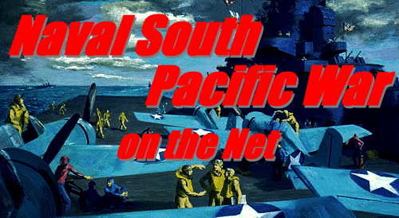

(C)2002 Ken-ichi Tokumitsu
Nara-Shika Seisakusho
Naval South Pacific War on the Netは以下の参照及び、参考によって開発されました。
㈱工学社 ＤｉｒｅｃｔＸ７ 実践プログラミング
㈱ピアソン・エデュケーション 入門ＤｉｒｅｃｔＸ７プログラミング
(株)学習研究社 [歴史群像]太平洋戦史シリーズ ⑭空母機動部隊
及び他の同シリーズ。
歴史群像新書 激闘 南太平洋海戦 平塚 柾緒
著
(株)日本出版社
Ｂｏｍｂ Ｃｏｍｉｃｓ 空母艦攻隊 滝沢 聖峰 著
Nihon Kaigun
http://www.skypoint.com/members/jbp/kaigun.htm
Ｎａｖａｌ Ｈｉｓｉｔｏｒｉｃａｌ Ｆｏｕｎｄａｔｉｏｎ Ｐｈｏｔｏ Ｓｅｒｖｉｃｅ
http://www.history.navy.mil/index.html
その他に多くの資料を参考に致しました。全てに感謝を致します。
本ソフトはＷｉｎｄｏｗｓ用のフリーウェアソフトです。配布、転載は基本的に自由ですが、転載の場合
は出来れば ご一報ください。
本ソフトの著作権は全て、作者の徳光
健一にあります。
なお、本ソフトの起動、使用による、いか
なる損傷その他も当方では一切関知致しません。
ユーザー各位の責任において使用してください。
解凍後、任意の場所にこのゲームのフォルダを置いて下さい。
アンインストールはそのフォルダを削除するだけです、レジストリへの操作は一切行って
おりません。
Ｗｉｎｄｏｗｓ９５以降の互換ＯＳで、ＤｉｒｅｃｔＸ７．０以降がインストールされていること、且つＤｉｒｅｃｔＸが
正しく作動すること。ビデオラムが４ＭＢ以上あること、無くても作動はします。
尚、一部のハードウェア、設定では動かない場合があります。
このゲームはＮａｖａｌ Ｓｏｕｔｈ Ｐａｃｉｆｉｃ Ｗａｒの通信対戦版です。したがって、ゲームの基本的な
ルールは上記の説明書を参照してください。また、多少のルール変更がありますが、後述します。
本バージョンでは通信対戦のみで遊べます、シングルゲームは一切ありません。

ゲームアプリケーションを起動してください。タイトル画面が表示されます。この時、マウスの右クリックで
「通信セットアップ」画面になります。ここでＦ６キーを押せば接続用のダイアログが表示されます
通信デバイス、ホストかゲスト、それぞれに必要なデータを入力してください。
接続が完了すると、相手の名前が表示されホスト側の画面下部に「通信対戦開始」が表示され、カーソルで
選択し、左クリックしてください。
「通信対戦セッティング」では、シナリオ選択と、各サイドの操作対象が選択できます。ただし、操作できるのは
ホスト側のみです。ゲスト側は選んでいる様子を眺めるだけです、ただ、この時からチャットが出来るので
それを利用してコミュニケーションが出来るはずです。「->>>」のマークがついている項目は何らかの操作が
出来ます。
「リジュームスタート」リジュームセーブされたデータでゲームを再開します。
操作対象とシナリオを選んだ時点で「コンフィギュレーション」設定できるようになります。ここでは、増援を
中心に設定できます。
「オートセーブスタート」ゲーム中にオートセーブされたデータでゲームをリジューム始動します。およそ
１分３０秒ごとにオートセーブされます。
「勝敗条件の切り替え」、設定された勝敗条件によるゲーム終了を有効にするか無効にするかを選択できます。
「補給割当増加率（ホスト／ゲスト）」、少しずつ増えていく補給割当の点数を設定します。
「初期補給割当（ホスト／ゲスト）」、ゲーム開始直後の補給割当の点数です。（ホスト／ゲスト）」
「増援ユニットの制御」、補給できる対象を制限できます。
「シナリオセッティングへ戻る」、シナリオセッティングへ戻ります。
「ゲームスタート」、設定されたシナリオ、補給設定でゲームが開始されます。

「経過時間」、通信対戦版では制限時間という概念が無くなりました。そのシナリオの勝敗判定がでるまで
時間を刻んでいきます。
「シナリオ選択へ」、シナリオセッティング画面に戻ります。
「リジューム」、現在のゲームを一旦中断し、プログラムを終了させた後でも、再接続すればゲームを
途中から再開できます。ただし、リジュームセーブで終了した同じユーザー同士で、ホストプレイヤーが
同じでなければなりません。また、片方の相手が別のユーザーとの対戦をリジュームセーブした場合、
そのデータで前のユーザーとのゲームは再開できません。正確には出来ますが、すぐに何らかのエラー
になります。
「補給割当」、その右の表示される点数が補給割当の点数です。
「要求対象」、要求される種類を表示します。
「前の機種、次の機種」、マウスクリックすることにより、要求対象を変更します。
「要求する（その他）」、割当点数が十分あり、要求制限されていなく、ユニットリミットがなければ
そのユニットを増援できます。選択後、しばらくすればマップに登場します。
細かなルール変更は省きます。
＊輸送船が揚陸艇を出すと消滅します。
＊地上施設には揚陸してもすぐに稼動せず、工事期間があるものがあります。
＊軍港の近くに敵潜水艦がいると駆逐艦の様にその場所が矩形で示されます。

この通信対戦版では勝敗条件を無効にしたり、増援値を変更したり出来ます。
つまり、ユーザー各位であらかじめ勝敗条件、増援制限などを決めておいて任意の
勝敗判定で競うことが出来ます。例えば、増援条件を、うまく操作することによってゲームを面白く展開できます。
増加率をどちらかが有利になるようにしておけば、かならず、有利にしたほうが勝利するでしょう。
で、おなじ条件で操作対象だけを換えてその経過時間を競うというものです。
このゲームでは対戦相手を見つけない限りはゲームができません。ＬＡＮやシリアル接続があるので
ＰＣが複数ある場所ならゲームは可能です。ただ、一般的な通信対戦での相手探しはインターネット
上で探すのが良い手です。これなら日本全国どころか世界中の方と対戦が出来ます。
とりあえず、日本語版では我が奈良鹿製作所のＨＰにおいでくださいませ。対戦相手に飢えた方が
カモを探していることでしょう。ＵＲＬは最後に記しておきます。

ついーし！遂に、通信対戦公開版を出すことが出来ました。思えば、最初のシングル版を出して以来
もう２、３年になるはずです。そのころから考えるとかなーり進化しています。確か最初のシングル版は
シナリオが１０個も無かった筈です。この通信対戦版も最初に出してから１年ほどほったらかし
の期間がありましたが、まぁまぁ、何とか満足できる公開版ができました。くくー、走馬灯の様に
苦労がよみがえってきます。この通信対戦のインターネットでの対戦ではｎａｋａｇａｗａ氏の協力が
あって、何とかまともに動いてます。どこかで、彼を見かけたら、礼をいっておくれ。
ただ、この通信対戦版の現バージョンではまだまだシナリオやゲームバランスの調整が十分とは言えない
ので、こんな勝敗条件をこんな増援条件でいくとおもしろいというのがあれば、是非メール下さい。
こちらで考慮した上で次バージョンに影響させるかもしれません。
平成１４年、４月吉日
ぜひぜひお越し下さいませ。ＵＲＬは以下。
http://www008.upp.so-net.ne.jp/nara-shika/
なおメールは
(C)2002 Ken-ichi Tokumitsu - Naval South Pacific War on the Net - Nara-Shika Seisakusho